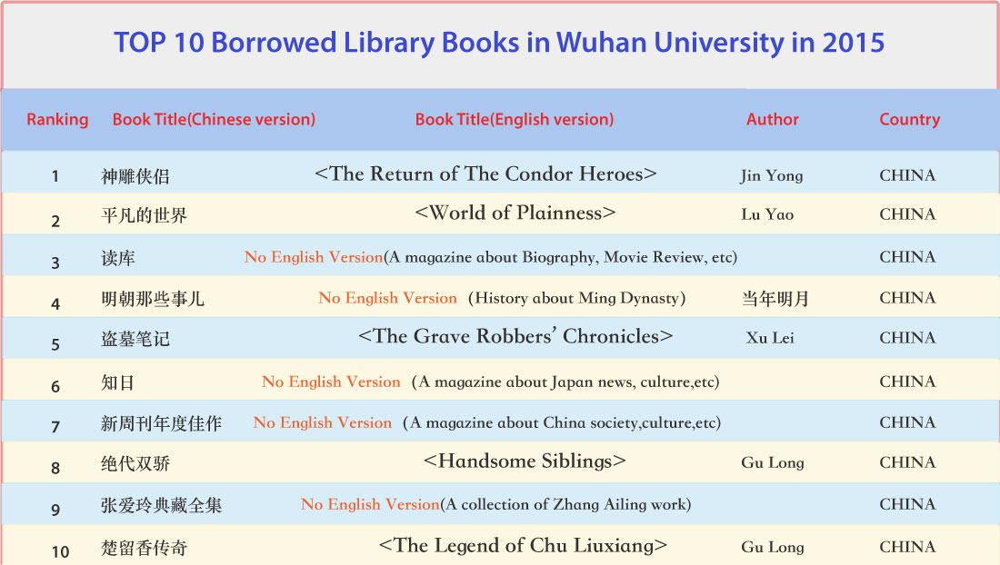

2015 TOP 10 Borrowed Library Books in China’s Top Universities
What books are Chinese undergraduates reading? More about science, fiction, novel, or art? Recently, the official weibo account of People’s Daily released the Top 20 Borrowed Library Books in several top universities in China. Now i’ve made the English version of four of them, which are Peking University, Fudan University, Wuhan University, and Sun Yat-sun University. Now let us take a look.
After reading the list, Mi Hong, the professor from Zhejiang University commented, “From the list, We can see that Chinese students read less about classics, philosophy. We pay more attention to the future and today.” Can Tianxin, professor from math department of Zhejiang University stated that we still need to be more open minded, and still have a lot of work to do in education. He also said that about 200 years ago, Cambridge University created a Conversazione Society, every week students and professors discussed a topic or talked about a book, lots of leaders in England civilisation were from this Conversazione Society. We need to learn from them.